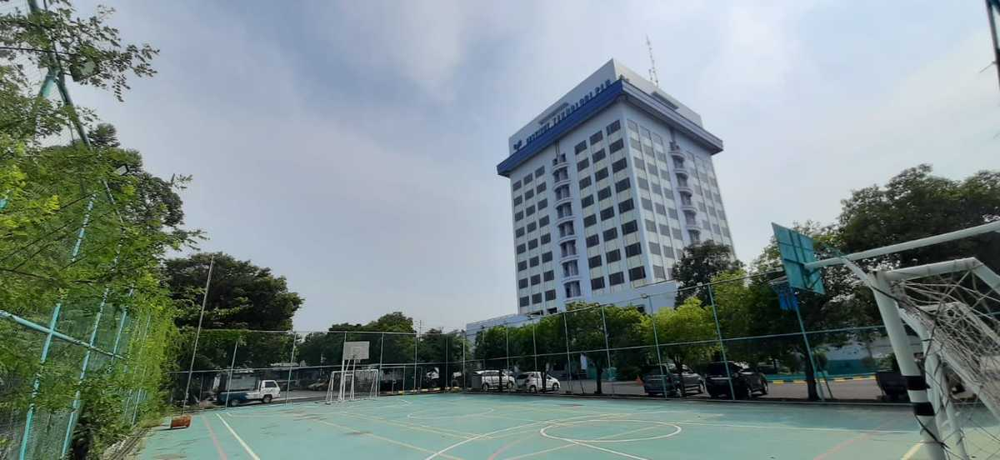
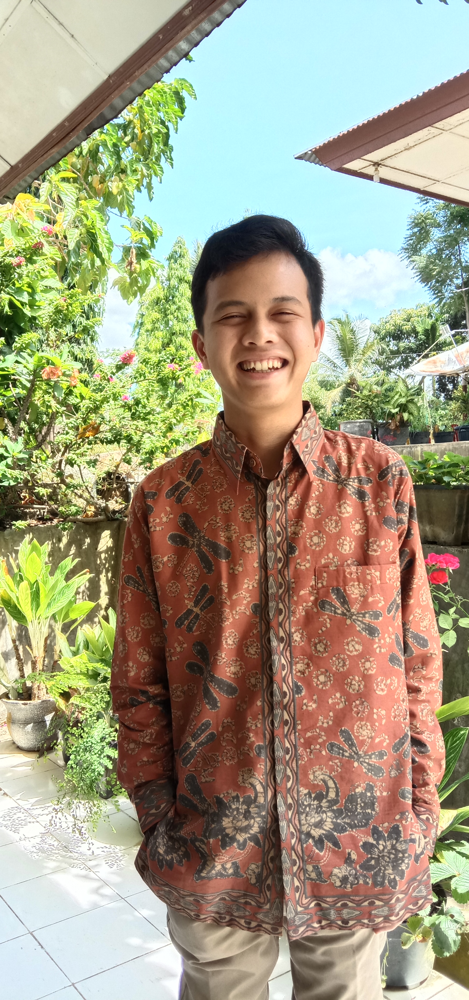
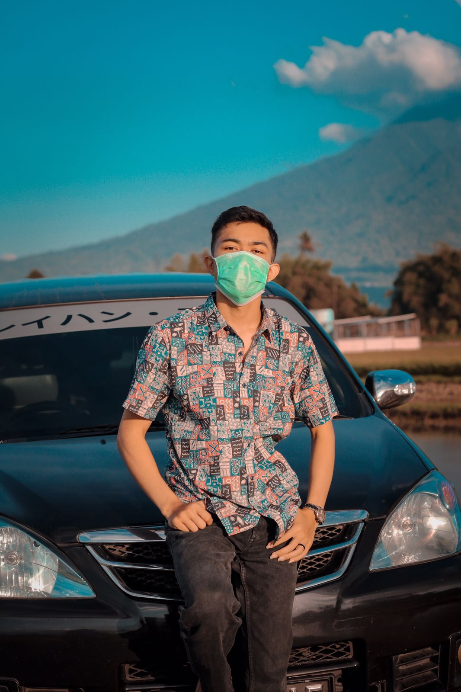

ABOUT
Ayam renang adalah salah satu organisasi yang didirikan pada tahun 2021. organisasi ini bergerak untuk memfasilitasi kaum muda yang ingin membantu menjadi tenaga pengajar di sekolah-sekolah yang berada di daerah 3T (terdepan, terpencil dan tertinggal) untuk pendidikan yang lebih layak.
dengan Angota

Nama : Syekh Alam Sabbih
Nim : 201831074
Nama : ZAMRUD BAGINDA
Nim : 202031240
Nama : AFIEF FADLAN YUDRI
nim : 202031225
Nama : Achyana Naim
Nim : 202031223

Nama : Fariz alfi afida
Nim : 201831001
Adapun cabang darah ayam renang sudah tersedia di beberapa tempat di Indonesia